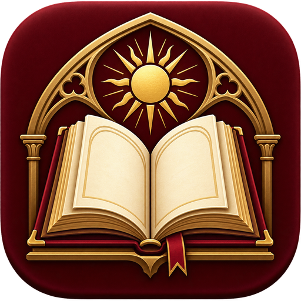

형이상학
01
존재자와 본질
De ente et essentia
존재자와 본질의 구조를 밝히는 짧고 치밀한 형이상학 입문서.

토마스 아퀴나스 서재한국어 완역 · 라틴어 원문 대조AQUINAS · 한국어 완역
라틴어 원문에서 직접 옮긴 저작을 제목으로 찾고, 한국어판 또는 라틴어 병기판으로 바로 읽을 수 있습니다.
13개 저작2,486문단한국어 954,134자
/ 키로 검색창 이동 · 검색 결과가 한 권이면 Enter로 열기
전체 13권
De ente et essentia
존재자와 본질의 구조를 밝히는 짧고 치밀한 형이상학 입문서.
De principiis naturae
질료·형상·원인·생성의 관계를 설명하는 자연철학 입문서.
De unitate intellectus contra Averroistas
모든 인간에게 하나의 지성만 있다는 아베로에스주의를 논박한 저작.
De aeternitate mundi
세계가 시작 없이 창조되었다는 말이 모순인지를 따지는 짧은 논고.
De substantiis separatis
천사를 다룬 미완의 대작. 플라톤·아리스토텔레스에서 교부까지 훑는다.
De mixtione elementorum
원소가 섞인 뒤에도 남아 있는지를 묻는 서한 형식의 짧은 글.
Summa Theologiae, Prima Pars, qq. 1-2
신학이 학문인가를 묻는 제1문제와, 하느님의 존재를 다섯 길로 증명하는 제2문제.
Summa Theologiae, Prima Pars, qq. 3-11
하느님의 단순성·완전성·좋으심·무한하심·불변성·영원성·하나이심을 다루는 아홉 문제.
Summa Theologiae, Prima Pars, qq. 12-13
하느님을 어떻게 알아볼 수 있으며 어떤 이름으로 부를 수 있는지를 다루는 두 문제.
Summa Theologiae, Prima Pars, qq. 14-18
하느님의 앎과 이데아, 참됨과 거짓됨, 그리고 하느님의 생명을 다루는 다섯 문제.
Summa Theologiae, Prima Pars, qq. 19-26
하느님의 의지와 사랑, 올바르심과 자비하심, 섭리와 미리 정하심, 능력과 지복을 다루는 여덟 문제.
Summa Theologiae, Prima Pars, qq. 27-35
삼위일체를 여는 아홉 문제. 위격의 발출과 관계에서 아버지의 위격, 말씀과 모상까지.
Summa Theologiae, Prima Pars, qq. 36-43
성령과 사랑과 선물, 위격과 본질의 관계, 그리고 하느님 위격의 파견을 다루는 여덟 문제.
일치하는 책이 없습니다. 다른 제목이나 분야를 입력해 보십시오.